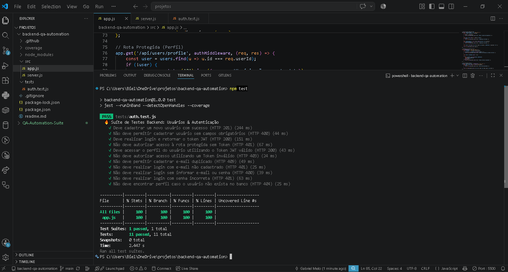

Portfólio
Projetos & Desenvolvimentos

Suíte de Testes Automatizados QA
Laboratório de testes (Full-Stack QA) cobrindo validações de rotas HTTP com API Node.js, testes E2E automatizados no Cypress e testes de contrato e integração no Postman.
Linguagens / Ferramentas utilizadas:
Cypress, Postman, Node.js, JavaScript, Tailwind CSS
Ver repositório no GitHub ↗
Automação Backend & API REST
API REST com JWT e Bcrypt. Suíte de testes (Jest/Supertest) com 100% de cobertura e esteira de CI/CD (GitHub Actions).
Linguagens / Ferramentas utilizadas:
Node.js, Express, Jest, Supertest, JWT, GitHub Actions
Ver repositório no GitHub ↗Sistema Web para Gestão Interna
[ Sua descrição: Aplicação web desenvolvida para controle operacional, com foco em usabilidade e performance de interface. ]
Linguagens / Ferramentas utilizadas:
HTML, Tailwind CSS, JavaScript, Python